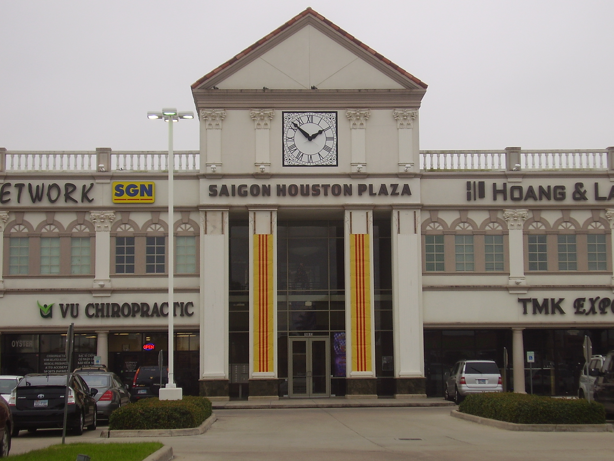
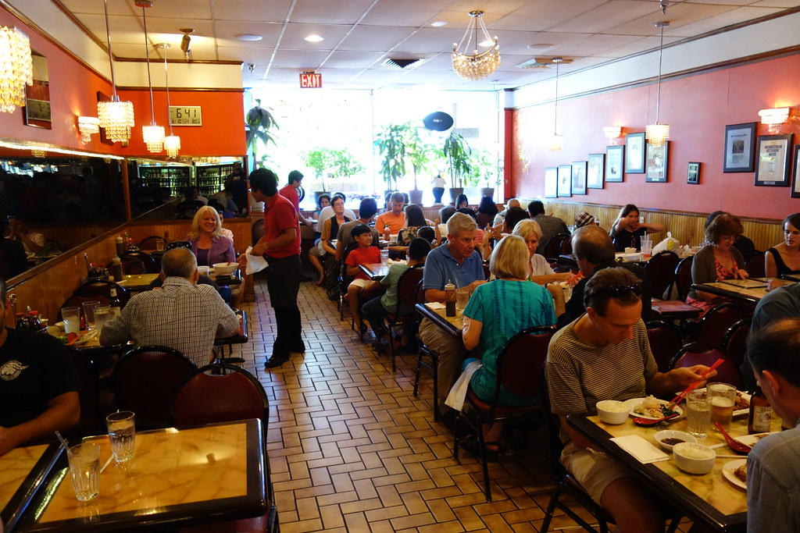
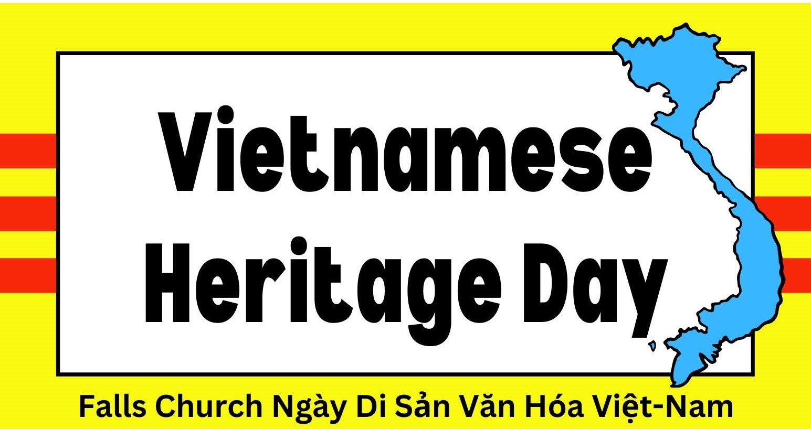

🏘️Cộng đồng người Việt tại Hoa Kỳ
Cộng đồng người Việt tại Hoa Kỳ là một trong những cộng đồng người nhập cư lớn và có ảnh hưởng sâu rộng. Tính đến năm 2024, cộng đồng người Việt tại Hoa Kỳ ước tính khoảng 2,4 triệu người, chiếm khoảng 8% dân số người Mỹ gốc Á. Trong số này, khoảng 60% là người nhập cư (sinh ra ở Việt Nam) và 40% sinh ra tại Hoa Kỳ. Sau biến cố năm 1975, hàng trăm nghìn người Việt đã đến Mỹ qua các đợt tị nạn, hình thành những cộng đồng vững mạnh tại các bang.
Tỷ lệ nhập quốc tịch: Người Việt có tỷ lệ nhập quốc tịch cao nhất trong số các nhóm nhập cư tại Hoa Kỳ, với 78% người đủ điều kiện đã trở thành công dân Mỹ tính đến năm 2023 .
Thu nhập trung bình: Năm 2023, thu nhập hộ gia đình trung bình của người Mỹ gốc Việt là 88,467 USD, cao hơn mức trung bình toàn quốc là 80,610 USD .
Tỷ lệ thất nghiệp: Năm 2023, tỷ lệ thất nghiệp trong cộng đồng người Việt là 2,8%, thấp hơn mức trung bình toàn quốc là 3,6% .
📍 Phân bố người Việt theo tiểu bang (2025)
California: Tính đến năm 2025, là nơi có cộng đồng người Việt lớn nhất tại Hoa Kỳ, với khoảng 811,048 người, chiếm khoảng 40% trong tổng số người người Mỹ gốc Việt. Các khu vực tập trung đông người Việt:
- Little Saigon tại Orange County là khu vực tập trung đông người Việt ước tính khoảng 189,000 người. Khu vực này nổi tiếng với các trung tâm thương mại như Phước Lộc Thọ (Asian Garden Mall) và là trung tâm văn hóa của người Việt tại Hoa Kỳ.
- Little Saigon tại San Jose ước tính khoảng 106,992 người, đây là nơi tập trung đông đảo người Việt, với các trung tâm thương mại như Grand Century Mall và Vietnam Town, phản ánh sự phát triển mạnh mẽ của cộng đồng người Việt tại vùng Silicon Valley.
- Quận Los Angeles: 95,600 người.
Houston, Texas: Dân số người Việt khoảng 157,000 người, là cộng đồng người Việt lớn thứ hai tại Hoa Kỳ, chỉ sau Los Angeles.
Cộng đồng người Việt chủ yếu sinh sống tại khu vực Little Saigon trên đường Bellaire Boulevard, phía tây nam Houston. Khu vực này nổi tiếng với các nhà hàng, chợ và doanh nghiệp Việt Nam, phản ánh sự đa dạng văn hóa và ẩm thực của cộng đồng. 
Virginia: Hiện có khoảng 75,078 người người Mỹ gốc Việt. Cộng đồng người Việt tập trung chủ yếu tại khu vực Bắc Virginia, đặc biệt là Quận Fairfax.
Một địa điểm nổi bật là Eden Center ở Falls Church, được xem là trung tâm văn hóa và thương mại của người Việt tại khu vực này.
Với hơn 125 cửa hàng, nhà hàng, và tiệm dịch vụ. Nơi đây bạn có thể mua sắm và thưởng thức tất cả món ăn truyền thống như phở, bún bò huế, bánh mì . 👉 Xem đánh giá của khách về ẩm thực truyền thống →

🎉 Hoạt động lễ hội văn hóa & sự kiện
Eden Center không chỉ là điểm mua sắm mà còn là trung tâm văn hóa, nơi tổ chức các lễ hội như Tết Nguyên Đán, Trung Thu và các lễ hội âm nhạc được tổ chức hằng năm nhằm mục đích đem đến cho cộng đổng người Việt một ngày vui truyền thống và điều đó đã trở thành cầu nối văn hóa, giúp thế hệ trẻ gắn kết với cội nguồn.

Lễ hội Châu Á
Lễ hội Châu Á thường niên lần thứ năm trên phố Main đã được diễn ra vào Chủ nhật, ngày 18 tháng 5 năm 2025 từ 12:00 trưa đến 6:00 chiều tại khu phố cổ Fairfax. Năm nay kỷ niệm "Năm con Rắn" và đang trở thành một trong những sự kiện lớn nhất và tốt nhất cho đến nay. Lễ hội tôn vinh văn hóa châu Á với ẩm thực, nghệ thuật, thủ công, giáo dục và các màn trình diễn đặc sắc. Biểu diễn múa lân , nhạc K-pop, múa truyền thống Việt Nam, Trung Quốc, Hàn Quốc. Cuộc thi cosplay, karaoke, khu vực bia ngoài trời . Hơn 60 gian hàng ẩm thực và 60 gian hàng thủ công mỹ nghệ. Hoạt động cho trẻ em và gia đình.
Lễ Tưởng Niệm 50 Năm Quốc Hận 30 Tháng Tư
Washington, D.C. Ngày 30 tháng 4 năm 2025. Người Việt từ khắp 23 tiểu bang Hoa Kỳ và Canada đã tề tựu tại Đài Tưởng Niệm Lincoln, thủ đô Washington, D.C., để long trọng tổ chức Đại Lễ Tưởng Niệm 50 Năm Quốc Hận 30 Tháng Tư — đánh dấu nửa thế kỷ ngày miền Nam Việt Nam bị cưỡng chiếm bởi chế độ cộng sản.
Hội đồng quận Fairfax vinh danh cộng đồng người Việt
Ngày 22 tháng 4, năm 2025, hội đồng giám sát quận Fairfax đã vinh danh cộng đồng người Mỹ gốc Việt bằng một nghị quyết kỷ niệm 50 năm ngày Sài Gòn thất thủ, đồng thời ghi nhận những đóng góp của cộng đồng Việt-Mỹ tại địa phương và quốc gia trong suốt 50 năm qua. Đó là một sự kiện đánh dấu 50 năm những thành tựu to lớn của cộng đồng người Mỹ gốc Việt tại Fairfax, Virginia . Những đóng góp của cộng đồng Việt-Mỹ trong cả lĩnh vực công và tư là nguồn tự hào lớn cho cộng đồng của chúng ta.Triển lãm nghệ thuật tại Eden Center
Vào thứ Sáu, ngày 16 tháng 5 năm 2025 đã diễn ra buổi lễ khánh thành bức tranh tường mới mang tên “Still We Rise” tại Trung tâm Eden. Tác phẩm nghệ thuật được tạo ra bởi Nhung Marilyn Phan một nghệ sĩ học sinh Việt Mỹ tài năng tại Trường Trung học Eleanor Roosevelt ở Greenbelt, Maryland. Tác phẩm nghệ thuật kỷ niệm 50 năm kết thúc Chiến tranh Việt Nam, tôn vinh câu chuyện và sức mạnh, sự kiên cường, đổi mới và niềm tự hào cộng đồng người Mỹ gốc Việt .Cộng đồng người Việt tham gia Ngày Lễ Độc Lập Hoa Kỳ 2025
Vừa qua, Nhóm Múa Cộng Đồng Người Việt Nam đã vinh dự tham gia sự kiện diễu hành chào mừng Ngày Lễ Độc Lập Hoa Kỳ 2025 tại thủ đô Washington, D.C. Sự góp mặt của nhóm không chỉ thể hiện tinh thần tích cực đóng góp của cộng đồng người Việt vào các hoạt động văn hóa - xã hội của nước sở tại, mà còn là dịp để quảng bá vẻ đẹp bản sắc truyền thống Việt Nam đến bạn bè quốc tế. Đây là minh chứng rõ nét cho sự nỗ lực hội nhập sâu rộng của người Việt tại Hoa Kỳ, đồng thời khẳng định vai trò ngày càng lớn mạnh của cộng đồng trong đời sống đa văn hóa của nước Mỹ.
Sự kiện sắp tới
🎭Ngày di sản văn hóa Việt Nam
📅 Thời gian: Thứ Bảy, ngày 7 tháng 6 năm 2025, từ 11:00 sáng đến 3:00 chiều
📍 Địa điểm: Cherry Hill Farmhouse, 312 Park Avenue, Falls Church, VA
🎟️ Vé vào cửa: Miễn phí, không cần đăng ký trước
📝 Nội dung nổi bật: Hợp tác với Câu lạc bộ Văn học và Văn hóa Việt Nam (VLAC), sự kiện mang đến trải nghiệm văn hóa Việt độc đáo thông qua âm nhạc sống, các màn trình diễn múa, đồ cổ và ẩm thực truyền thống.
Xem bản đồ🏮 Lễ hội Trung Thu
📅 Thời gian: Thứ Bảy, ngày 13 tháng 9 năm 2025, từ 12:00 sáng đến 5:00 chiều
📍 Địa điểm: The Eden Center: 6751-6799 Wilson Blvd, Falls Church, VA 2204
📝 Nội dung nổi bật: Lễ hội bao gồm các buổi biểu diễn văn hóa trực tiếp, phát đèn lồng cho trẻ em, các hoạt động vui chơi cho mọi lứa tuổi và các cuộc thi.
Xem bản đồ
🎉 Tết Nguyên Đán
📅 Thời gian: Ngày 17 tháng 2 năm 2026 từ 12:00 chiều - 5:00 chiều. (Ngày chính xác sẽ công bố sau)
📍 Địa điểm: The Eden Center: 6751-6799 Wilson Blvd, Falls Church, VA 2204
📝 Nội dung nổi bật: Lễ hội Tết Nguyên Đán bao gồm các điệu múa lân truyền thống, bao lì xì và các hoạt động cây ước cho mọi lứa tuổi. Lễ hội nhằm chia sẻ hy vọng cho một năm mới được nhiều may mắn đến cộng đồng người Việt.
Xem bản đồ👉 Dưới đây là các trang web cập nhật các sự kiện và hoạt động của cộng đồng người Việt tại Fairfax, Falls Church và khu vực lân cận.
 Cộng Đồng Người Việt
Cộng Đồng Người Việt